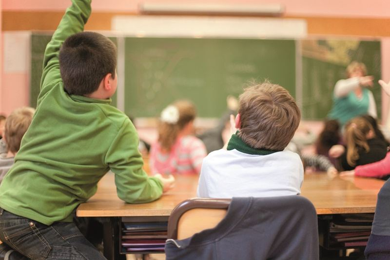
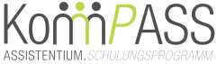

Start / Karriere
Arbeit, die etwas bewegt.
Ob mit Ausbildung oder als Quereinsteiger*in: Bei uns begleitest du Kinder, Familien und Menschen im Alltag, direkt bei dir um die Ecke im Kreis Pinneberg.

Unser Team
Unsere Schulbegleiter*innen kommen aus der Region. Sie sind empathisch, engagiert und erfahren im Umgang mit Kindern.
Idee: Hier passen 3 bis 4 Teamfotos mit Vornamen und einem Satz, warum sie gern bei ASSISTENTIUM arbeiten. Das wirkt bei Bewerbungen stärker als jeder Text.

Unser Schulungsprogramm
Mit unserem firmeneigenen Schulungsprogramm bereiten wir dich gründlich auf deine Aufgabe vor.
- Kommunikation
- Kinderschutz
- Autismus
- Erste Hilfe
- AD(H)S
- Gewalt
- und weitere Themen
Unsere Kooperationspartner
- project excellence development
- AAT® CT® – Sascha Tiedemann
- ZAK Zentrum für Autismus Kompetenz
Mit Unterstützung von
- ASB Hamburg
- Johanniter-Unfall-Hilfe e.V.
- WingTsun Schule Wedel
Was wir dir bieten
Das gilt für alle Stellen. Besonderheiten findest du in der jeweiligen Anzeige.
- Sozialversicherungspflichtige Anstellung
- Gute Work-Life-Balance
- 30 Tage Urlaub
- Angemessene Vergütung
- Fachberatung
- Schulungen und Fortbildungen
- Cafeteria-Modell
- Betriebliche Altersvorsorge
- Krankenzusatzversicherung
- Jobticket
- Alltagslotse
- Corporate Benefits
- Wohnortnahe Einsatzorte
- Wertschätzendes Team
Offene Stellen
Schulbegleiter*innen und Integrationshelfer*innen (m/w/d)
Schulbegleiter*innen und Integrationshelfer*innen (m/w/d)
Du begleitest Kinder und Jugendliche mit (drohender) seelischer, geistiger, körperlicher oder mehrfacher Behinderung, die ihren Schulalltag noch nicht allein bewältigen können.
Deine Aufgaben
- Begleitung des Kindes im Schulalltag
- Hilfestellung und Sicherheit nach individuellem Bedarf
- Integration in die Klassengemeinschaft
- Konflikte bewältigen und Deeskalationsansätze entwickeln
- Verbindung zwischen Schule und Elternhaus, in Absprache mit ASSISTENTIUM
- Mitwirkung im Klassenalltag
Das bringst du mit
- Fachlicher oder sozialer Erfahrungshintergrund, Quereinstieg ausdrücklich willkommen
- Einfühlsames Auftreten und Stressresistenz
- Freude an der Arbeit mit Kindern
- Ganzheitlicher Blick auf verhaltensauffällige Kinder
- Geduld, Engagement und Flexibilität
Einsatzorte: Kreis Pinneberg, u. a. Wedel, Elmshorn, Uetersen, Moorrege, Appen, Pinneberg
Erzieher*innen / pädagogische Fachkräfte (m/w/d)
Erzieher*innen / pädagogische Fachkräfte (m/w/d)
Deine Aufgaben
- Individuelle Begleitung von Kindern und Jugendlichen mit (drohender) seelischer Beeinträchtigung in Unterricht, Schulalltag und privatem Umfeld
- Unterstützung im Alltag, Sicherheit und Hilfestellung nach Bedarf
- Förderung von Arbeits- und Lernverhalten, Interaktion und Kommunikation
- Integration ins soziale Umfeld, Konfliktbewältigung und Deeskalation
- Vermittlung zwischen Schule, Elternhaus und privatem Umfeld
Das bringst du mit
- Sozialpädagogischer Hintergrund, z. B. als Erzieher*in oder vergleichbar
- Empathie sowie soziale und kommunikative Kompetenz
- Belastbarkeit, Geduld, Engagement und Flexibilität
- Freude an der Arbeit mit Kindern und Jugendlichen
Besonders: garantierte freie Ferienzeiten · Einsatzort: Wedel und Kreis Pinneberg
Sozialpädagog*innen (m/w/d)
Sozialpädagog*innen (m/w/d)
Deine Aufgaben
- Mitarbeit beim Aufbau der ambulanten Jugendhilfe und der Organisationsstruktur
- Beratung, Betreuung und Förderung von Kindern und Eltern im Einzel- und Familiensetting
- Systemische Arbeit
- Hilfepläne erstellen, umsetzen und dokumentieren
- Zusammenarbeit mit dem ASD und Partnern
Das bringst du mit
- Studium Sozialpädagogik oder Soziale Arbeit mit staatlicher Anerkennung
- Wünschenswert: Fachkraft nach §§ 8a, 8b SGB VIII (Kindeswohl)
- Erfahrung in Familienhilfe oder Erziehungsberatung von Vorteil
- Kenntnisse in Krisenintervention und systemischer Beratung
- Eigenständige Arbeitsweise, Belastbarkeit und Motivation
Alltagsbegleiter*innen & Familienentlastende Unterstützung (m/w/d)
Alltagsbegleiter*innen & Familienentlastende Unterstützung (m/w/d)
Deine Aufgaben
- Begleitung von Senioren, Kindern und Menschen mit Unterstützungsbedarf im Alltag
- Hilfe bei Haushalt, Terminen, Einkäufen und Freizeit
- Förderung von Selbstständigkeit und Lebensqualität
- Unterstützung von Familien im familienentlastenden Dienst
- Bindeglied zwischen Betreuten, Angehörigen und ASSISTENTIUM
Das bringst du mit
- Idealerweise eine Schulung zur Alltagsbegleitung (120 UE)
- Freude an echten Begegnungen
- Geduld, Einfühlungsvermögen und ein offenes Ohr
- Flexibilität und Motivation
Zur Abstimmung: Auf der alten Seite steht noch „Beginn ab Januar 2026“.
Zur Abstimmung: In den Bildern liegt eine Grafik zur Stelle „Personalsachbearbeitung“. Soll die Anzeige mit auf die Seite?
Interesse an einer Mitarbeit?
Wir freuen uns über deine Bewerbung, auch initiativ. Schick uns deine Unterlagen per E-Mail oder als Postmappe.
ASSISTENTIUM gGmbH
Rosengarten 8
22880 Wedel
[Bewerbungs-E-Mail]
- Fragen zur BewerbungBerit Johannsen[Platzhalter Telefonnummer]
- Fragen zur BewerbungSabrina Gollian[Platzhalter Telefonnummer]